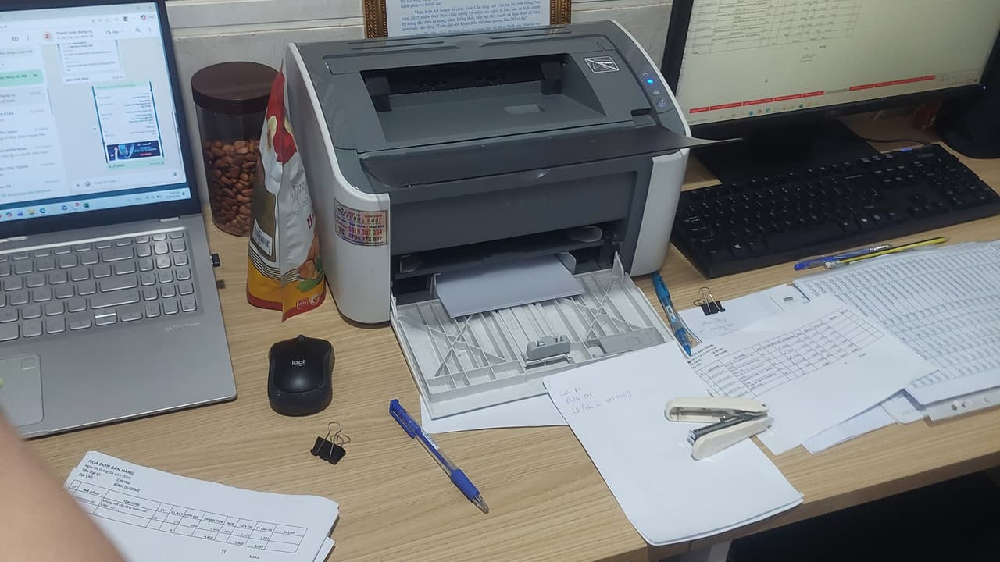

Khu vực phục vụ — tìm "nạp mực máy in gần đây" thì gần tới đâu?
Kho vật tư đặt tại 5/19 Phạm Hùng. Dưới đây là thời gian tới thật của từng khu — không phải con số "30 phút" dán cho cả thành phố.
"Gần đây" nghĩa là gì, nói thật
Rất nhiều khách tìm bằng "nạp mực máy in gần đây" hoặc "sửa máy in gần đây" — và điều họ thật sự muốn biết là: gọi thì bao lâu có người tới. Câu trả lời phụ thuộc kho vật tư nằm ở đâu, chứ không phụ thuộc trang web viết gì.
Kho của chúng tôi ở Phạm Hùng. Vì vậy Quận 8 là gần nhất, rồi tới Quận 4, Quận 5, Quận 6 — ba quận này đi cùng tuyến. Quận 7 phải qua cầu nên lâu hơn. Bình Chánh rộng, Bình Hưng thì gần mà Vĩnh Lộc thì xa. Nhà Bè xa nhất, chúng tôi hẹn theo tuyến chứ không hứa gấp.
Chúng tôi ghi rõ khung thời gian từng khu dưới đây để anh/chị chủ động công việc, thay vì chờ một lời hứa chung cho mọi nơi.

Bảy quận huyện và thời gian tới
Quận 8
Kho mực và kỹ thuật của chúng tôi đặt tại 5/19 Phạm Hùng, xã Bình Hưng — ngay sát ranh Quận 8, cách khu Chánh Hưng và Phạm Thế Hiển vài phút chạy xe. …
Quận 7
Quận 7 là địa bàn đông nhu cầu nhất trong khu Nam, nhưng cũng khó vào nhất. Một nửa khách nằm trong cao ốc Phú Mỹ Hưng — nơi kỹ thuật phải đăng ký thẻ…
Quận 6
Quận 6 là quận buôn bán. Trung tâm là chợ Bình Tây và cả hệ thống vựa, sạp, hộ kinh doanh quanh đó — nơi máy in không dùng để in tài liệu mà để in phi…
Bình Chánh
Kho của chúng tôi nằm ngay trong xã Bình Hưng, nên phần phía bắc của địa bàn này là nhanh nhất trong cả bảy khu — thường 15–25 phút. Nhưng Bình Chánh …
Quận 4
Quận 4 nhỏ và sát trung tâm, nhưng đặc trưng là nhà phố chật và hẻm nhiều. Rất nhiều khách ở đây hỏi cùng một câu trước khi hỏi giá: "có làm tại nhà k…
Quận 5
Quận 5 là quận thương mại lâu đời: chợ An Đông, khu Chợ Lớn, phố thuốc đông y Hải Thượng Lãn Ông, các dãy cửa hàng sỉ trên Nguyễn Trãi và Trần Hưng Đạ…
Nhà Bè
Nhà Bè xa nhất trong địa bàn chúng tôi phục vụ, nên cách làm cũng khác: đi theo tuyến và hẹn lịch, không nhận gấp trong 30 phút. Chúng tôi nói rõ điều…
Phú Mỹ Hưng
Phú Mỹ Hưng là khu duy nhất trong cả địa bàn khu Nam mà người ta tìm bằng đúng tên khu chứ không bằng tên quận. Lý do dễ hiểu: ở đây là cao ốc và nhà …
Giá như nhau cho cả bảy khu
Chúng tôi không tính giá khác theo quận. Chỉ thời gian tới là khác, do khoảng cách thật.
Không thấy khu của anh/chị?
Gọi và cho biết địa chỉ — nếu ngoài địa bàn, chúng tôi nói thẳng thay vì nhận rồi để anh/chị chờ.